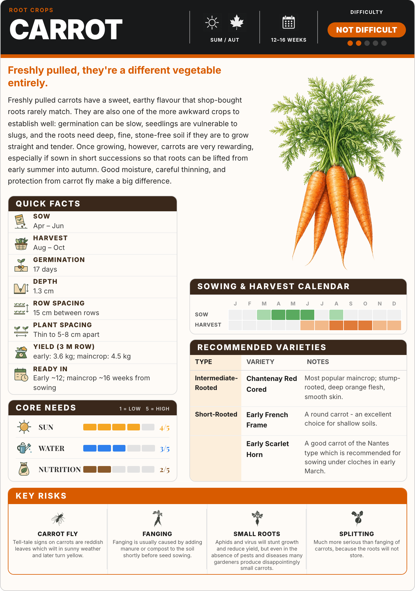
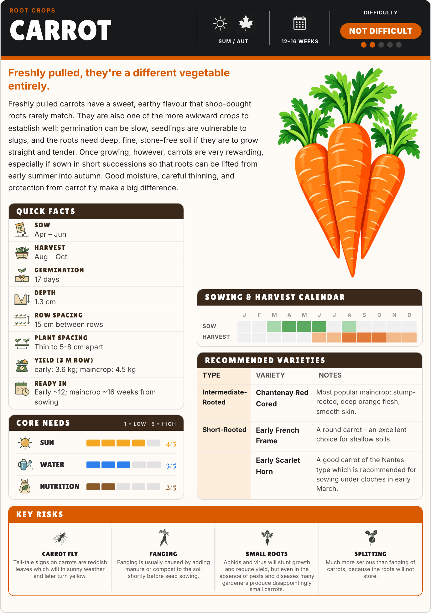

Current carrot page
The existing botanical hero and Inter headings, captured from the current renderer.


New: three colour and panel design studies →
One carrot page with a bright, blocky hero and chunky rounded headings. The body text, advice, colours, icons and panel layout are retained. This is a mockup for review, not an installed template change.
The existing botanical hero and Inter headings, captured from the current renderer.

A new illustrated hero and Lilita One for the title, panel headings and short labels. Body text stays in the existing font.
